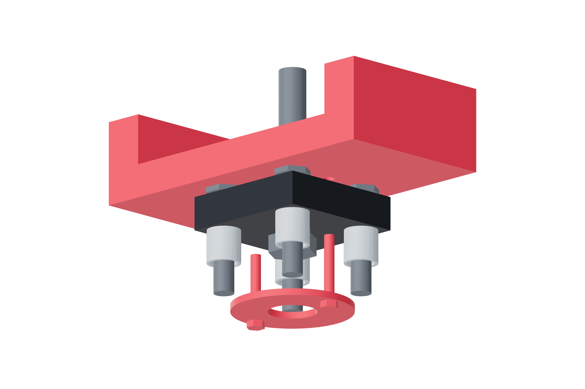

Payload / independent support98 / 179
Fit the two free-turning saddles
The fixed metal axle clamps the bearing inner race. The saddle rotates with the outer race, retained by its open printed cap.
Add2 swivel bases / saddles / caps · 2 608ZZ · 8 ten-mm base spacers / M6 × 30 · 2 M8 × 50 axles · 4 M3 × 20 cap bolts
Tools / setupSlot-8 M6 T-nuts · washers / locking nuts · caliper · supported actual cable

- Mount each base over four 10 mm metal spacers using four M6 × 30 joints. Verify T-nut reach without bottoming.
- Fit its fixed lower/upper metal contact tubes and the 608 inner race on the smooth portion of the M8 × 50 axle.
- Seat the saddle around the outer race; fit the cap with two M3 × 20 through-joints, washers and locking nuts. Keep its 14.5 mm opening clear of the inner race.
- Tighten the axle only onto metal tubes / inner race. Verify free rotation with the supported actual cable, cold and warm.
Ready when
Both saddles turn freely, the caps retain only their outer races, and no axial clamp load crosses a rotating printed wall. A pinched outer race, touching contact tube or unstable base fails support. Correct the measured stack before routing cable weight through it.